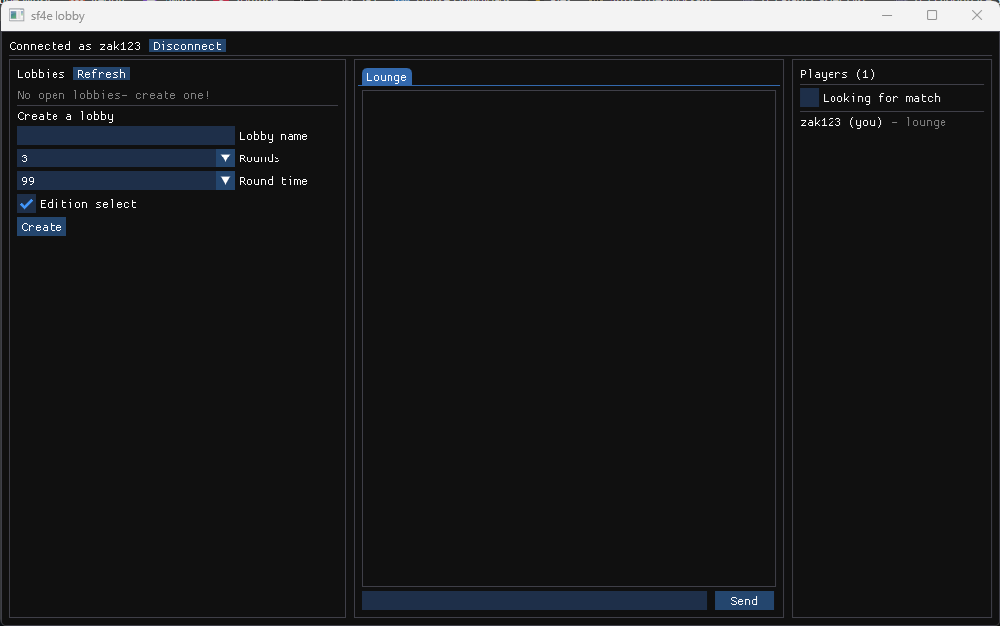

Rollback netcode and online lobbies for Ultra Street Fighter IV on Steam. An open-source project, very much in progress.
Download the latest release · Source on GitHub · Issues

sf4e by adanducci injects GGPO rollback netcode (instant inputs, lag hidden by prediction) into USF4 at runtime, without modifying any game files. This fork adds the online part around it: a desktop app with chat and a lobby browser, dedicated servers, and matches that launch the game directly.
Early playtest. Lobbies, chat, challenges, quickmatch, and auto-rematch work; the current goal is validating real internet matches. No rankings, spectating, or score tracking yet — rematch freely, nothing is recorded.
You need USF4 on Steam
(installed) and Windows 10+. Download sf4-rollback-gui-client.zip from the
latest release
and extract everything into one folder. Everyone needs the same release — the
server refuses mismatched builds.
LobbyClient.exe and pick a name — the playtest server
(sf4.zak123.com) is prefilled.Windows will warn you the first time. The downloads are new and not yet code-signed, so SmartScreen shows “Windows protected your PC” — click More info → Run anyway. Every binary is built in public by GitHub Actions straight from the source; code signing is in progress.
If matches keep failing after ~45 seconds: forward UDP port
23457 on your router. Two players on the same network usually can't play
each other.
Bugs:
open an issue with the
logs from %APPDATA%\sf4e\logs and a clip if you can.
This is an independent community fork. It is not related to, affiliated with, or endorsed by adanducci's sf4e project — please report problems with this fork here, not upstream.
Ultra Street Fighter IV is a trademark of Capcom. This project is not affiliated with or endorsed by Capcom, modifies nothing on disk, and requires your own Steam copy of the game.
MIT licensed. Built on sf4e and GGPO, with tunings from SF4-Netplay-Launcher.